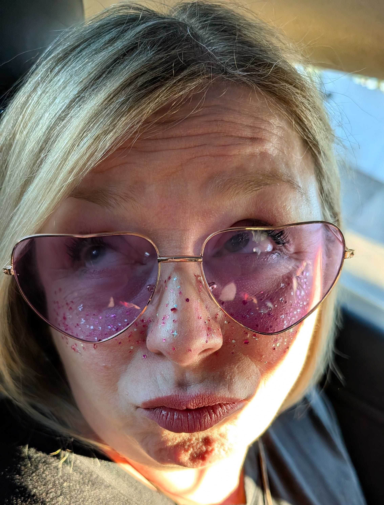

The snacks were out. The music was up. Audrey sensed joy and filed a formal complaint.
The Department of Respectful Sighing Presents
Audrey
A beloved party pooper, a cherished mood dimmer, and the reason every gathering keeps one emergency blanket for vibes.
:( officially emotionally overcast :(
Silent, because Audrey requested it.

Cloudy with a chance of leaving early, followed by a cozy text that somehow makes everyone forgive her.
All rulings are overturned if Lula is present. Lula is perfect. Lula is the doggie child, the tiny judge, the emotional support celebrity.
Can make a room say “awww” and “come onnnn” at the same time. Rare gift. Terrible power.
Yes, she poops the party. Yes, we love her anyway. These facts coexist sadly but beautifully.
:( :(( T_T :( :/ :(( T_T :( :(
😢😭☹️😞😢
😭☹️😞😢😭
☹️😞😢😭☹️
😞😢😭☹️😞
For Audrey, Angi, and the magnificent Lula.